Santuario de Las Lajas
El Santuario de Nuestra Señora del Rosario de Las Lajas es un templo
y basílica para el culto católico y veneración de Nuestra Señora de
Las Lajas. Este santuario se ubica en Ipiales, en el departamento de
Nariño, al sur de Colombia y es destino de peregrinación y turismo
desde el siglo xviii.
Galeria de Imágenes
 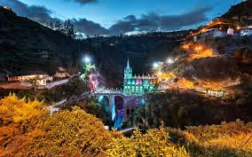
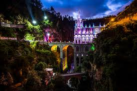
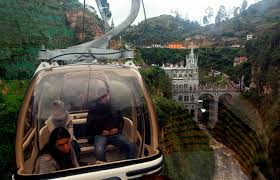
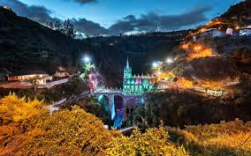
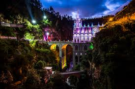
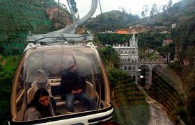
La Laguna de la Cocha
La laguna de La Cocha, también llamada lago Guamuez, es un gran
embalse natural de origen glaciar, ubicado en la localización
colombiana de El Encano, corregimiento del municipio de Pasto,
en el departamento de Nariño (Colombia). Es el segundo cuerpo de
agua natural más grande de la nación, después del lago de Tota.
Galeria de Imágenes
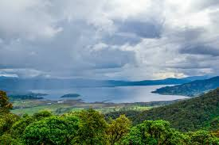
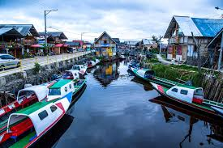
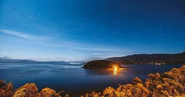
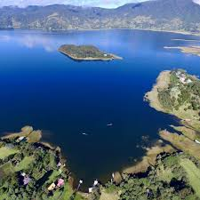
Volcan Cumbal
El volcán Cumbal o Nevado de Cumbal es un estratovolcán ubicado en
el municipio de Cumbal, 79 km al suroccidente de la ciudad de Pasto.
Con una altitud de 4764 m s. n. m., es el punto más alto del
departamento de Nariño. El volcán presenta actividad fumarólica en
su cima, sin embargo no ha presentado ninguna actividad de
importancia desde la década de 1930.
Galeria de Imágenes
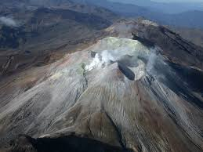
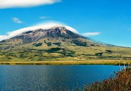
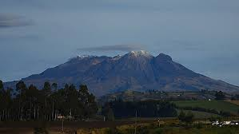

Museo del Oro Nariño
Museo del Oro Nariño - Banco de la República, inaugurado en 1984
y reinaugurado el 9 de diciembre de 2016, presenta una mirada
contemporánea sobre las sociedades prehispánicas de la región de
Pasto. Adicionalmente, trata el periodo colonial y la diversidad
cultural que fomentó la llegada de otros pueblos indígenas,
africanos y europeos a la zona.
Galeria de Imágenes
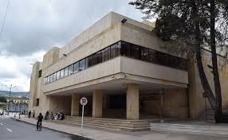
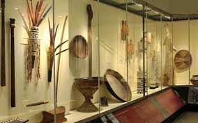
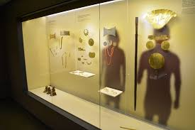

Gastronomia
El Departamento de Nariño es sabido como la despensa del País
dado que estas prodigiosas tierras fertilizadas con la actividad
natural de los ríos, volcanes, el mar y por supuesto las
laboriosas manos de personajes que el mundo ha generalizado como
pastusos.
Con base en la excelsa materia prima disponible, la gastronomía
es de un gusto sin igual, por su puesto las aéreas de producción
de los hoteles de Pasto afiliados a COTELCO Nariño ofrecen a sus
visitantes una amplia variedad de preparaciones regionales,
nacionales e internacionales.